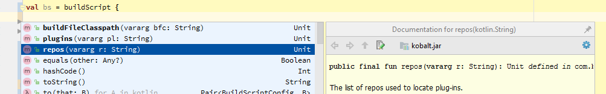

The build file is located in kobalt/src/Built.kt and it is a valid Kotlin file. It contains imports, the declaration of one or more projects and the declaration of additional configurations (e.g. packaging, publishing, etc...). Since it's a Kotlin file, it can also contain any class or function you need:
import com.beust.kobalt.*
val kobalt = project {
name = "kobalt"
group = "com.beust"
artifactId = name
version = "0.62"
directory = homeDir("kotlin/kobalt")
}
Here are a few noteworthy details about this small build file:
kobalt which you can reuse further in your build file, should you ever need to.
project and homeDir are supplied by Kobalt and are referred to as "directives"
In terms of syntax, there are basically three different ways to specify values in a build file:
name = "kobalt"
compile("dep1", "dep2", "dep2")
dependencies {
...
}
Remember that a build file is a valid Kotlin source, so you can use function calls instead of literal values, or any other correct Kotlin code in your build file:
version = readVersion()
Now that we have declared a project, we can use it to configure additional steps of our build, such as how to assemble it (creating jar and other files):
import com.beust.kobalt.plugin.packaging.assemble
val kobalt = project {
// ...
assemble {
jar {
}
}
}
This is the simplest jar declaration you can have. You can trigger the creation of this jar file by invoking the task "assemble" from the command line. Note the presence of the corresponding import: without it, your build file will not compile. Another interesting detail is that the assemble function we just imported is an extension function on the Project class, which is how the import makes it legal to call assemble in the middle of our project. If you remove the import, that line will no longer compile.
The jar directive accepts various settings, so let's be a bit more specific. And let's add a zip file too:
assemble {
jar {
fatJar = true
manifest {
attributes("Main-Class", "com.beust.FileHavingMainKt")
}
}
zip {
include("kobaltw")
include(from("$buildDirectory/libs"), to("kobalt/wrapper"),
"$projectName-$version.jar")
include(from("modules/wrapper/$buildDirectory/libs"), to("kobalt/wrapper"),
"$projectName-wrapper.jar")
}
war {
include(from("html"), to("web/static"), glob("*html"))
}
Our jar file is now declared to be a "fat jar" (which means it will include all its dependencies) and we specified a Main-Class to the jar Manifest, which means we will be able to invoke it with java -jar kobalt-0.61.jar. If you don't like this name, you can override it with a name = "myName.jar" statement. FileHavingMain is the class name in the com.beust package that contains a main() function.
The zip directive follows a similar structure, although here we are specifying which file we want to include. For more details on the packaging plug-in, please see its documentation.
buildScript directive
buildScript is a special directive that lets you control how the rest of the build file
will be compiled, such as defining which plug-ins and which repos to use:
val bs = buildScript {
repos("bintray.com/kotlin/kotlin-eap-1.1")
plugins("com.beust.kobalt:kobalt-line-count:0.18", "com.example:kobalt-optimize:0.3")
}
The following directives are available inside buildScript:
As always, you can use your IDE's auto-completion to find out which directives are available inside buildScript:

Since Build.kt is a valid Kotlin file, you can write arbitrary Kotlin code in it,
including defining tasks. If you ever need to perform an operation that is not supported by an
existing plug-in and it would be overkill to write a plug-in just for it, you can define that
task directly in your build file, including specifying its run dependencies so that it will
be executed exactly when you want it. Here is an example from TestNG's own build file:
@Task(name = "createVersion", runBefore = arrayOf("compile"), runAfter = arrayOf("clean"))
fun taskCreateVersion(project: Project) : TaskResult {
val path = "org/testng/internal"
with(arrayListOf<String>()) {
File("src/main/resources/$path/VersionTemplateJava").forEachLine {
add(it.replace("@version@", VERSION))
}
File("src/generated/java/$path/Version.java").writeText(joinToString("\n"))
}
return TaskResult()
}
This tasks takes a template file and replaces all occurrences of the string "@version@" with the actual version of the project. Obviously, this task is very specific to TestNG's own build and it wasn't worth writing a plug-in ftor this. Note the attributes runBefore and runAfter, which specify when this task will run. You can find more information about tasks in the plug-in development section.
If you are writing code or an inline task in your build file that requires additional libraries,
you can specify these dependencies with the buildFileClasspath() directive, which accepts a list
of dependencies in parameters. Each of these dependencies will then be added to the classpath when
your build file is compiled and run:
// Build.kt
val bs = buildScript {
buildFileClasspath("org.testng:testng:6.9.11")
}
val t = org.testng.TestNG() // now legal
You can declare compile and test dependencies as follows:
dependencies {
compile("com.beust:jcommander:1.48",
"com.beust:klaxon:0.14")
}
dependenciesTest {
compile("org.testng:testng:")
}
You can also specify local dependencies with the file directive:
dependencies {
compile(file("libs/async-http.jar"))
}
Kobalt lets you specify Maven coordinates in one line, such as "org.testng:testng:6.9.10". Note that Kobalt uses the Maven Coordinates defined in the Maven specification, which are a little bit different from the ones that Gradle uses.
The standard format for such coordinates, as explained in the link above, is:
groupId:artifactId:packaging:classifier:version
packaging (e.g. "jar") and classifier (usually an arbitrary name) are optional and can be omitted. If version
is omitted, Kobalt will resolve the artifact to its latest version from all the specified repos.
Most of the time, you will only specify groupId, artifactId and version, but if you ever need to specify additional components such as packaging (sometimes referred to as "extension") or classifier,
please take note that these should appear before the version number.
Here are a few examples of valid Maven coordinates:
# No version, resolves to the latest org.testng:testng: # Specifies an extension and a qualifier com.badlogicgames.gdx:gdx-platform:jar:natives-desktop:1.9.2
There are various kinds of dependencies:
"groupId:artifactId:version") or a versionless one
("groupId:artifactId:").
Native dependencies will only be used when you invoke the run task on your project:
dependencies {
native("org.lwjgl.lwjgl:lwjgl-platform:jar:natives-windows:2.9.3",
"org.lwjgl.lwjgl:lwjgl-platform:jar:natives-linux:2.9.3",
"org.lwjgl.lwjgl:lwjgl-platform:jar:natives-osx:2.9.3"
)
}
It's sometimes necessary to exclude specific dependencies from your build and Kobalt lets you do this in two ways: globally and locally.
A global exclusion applies to your entire project and means that any time the given dependency will be encountered, it will be completely excluded along with all its child dependencies.
dependencies {
compile("com.beust:jcommander:1.64")
exclude("org.testng:testng:6.10")
}
A local exclusion applies to a specific dependency and allows you to exclude that dependency and its children
when this dependency is resolved. If the locally excluded dependency is found as a child of another one,
it will be included normally. Local exclusions are therefore defined after a dependency specification
and you can define them either broadly or specifically (per groupId, artifactId, or
version):
dependencies {
compile("org.testng:testng:6.10") {
exclude(groupId = "org.apache")
}
}
In the example above, whenever Kobalt needs to calculate the dependencies of the org.testng:testng
artifact, it will exclude any dependency that is in the group org.apache and all its children.
dependencies {
compile("org.testng:testng:6.10") {
exclude(artifactId = "jcommander", version = "1.48")
}
}
In this sample, only jcommander version 1.48 and its children will be excluded
when resolving org.testng:testng:6.10.
You can define settings that will apply to all your Kobalt builds by creating
the file ~/.config/kobalt/settings.xml:
<kobaltSettings>
<localCache>/Users/beust/my-kobalt-repo</localCache>
<defaultRepos>
<repo>http://jcenter.com</repo>
<repo>http://example.com</repo>
</defaultRepos>
<proxies>
<proxy>
<type>http</type>
<host>proxy-host.com</host>
<port>1234</port>
</proxy>
</proxies>
</kobaltSettings>
Here is a list of the parameters you can configure:
| Name | Default | Description |
defaultRepos |
Default repos | List of repos overriding the default ones that Kobalt uses. |
kobaltCompilerVersion |
1.0.3 | The version of the Kotlin compiler that Kobalt uses. |
kobaltCompilerRepo |
None | The Maven repository where to find the compiler. By default, the compiler is looked up in the default repos (JCenter, Maven, ...). |
localCache |
~/.kobalt/cache |
Where Kobalt stores all the downloaded dependencies. |
localMavenRepo |
~/.kobalt/localMavenRepo |
Where Kobalt publishes artifacts when the task publishToLocalMaven is invoked. |
proxies |
None |
One or more proxies that Kobalt will use to download Maven dependencies. |
Templates are invoked with the --init parameter and typically used when you are creating
a new project and you want Kobalt to generate a few files to get you started. The name that follows
the --init parameter can be of three different types.
If the file is found and is a zip/jar file, it will be extracted in the current directory.
$ ./kobaltw --init ~/templates/file.jar
If the URL is valid and points to a zip/jar file, that file will be extracted in the current directory.
$ ./kobaltw --init http://example.com/file.jar
--listTemplates parameter:
$ kobaltw --listTemplates
Available templates
Plug-in: Kobalt
"java" Generate a simple Java project
"kotlin" Generate a simple Kotlin project
"kobaltPlugin" Generate a sample Kobalt plug-in project
You can then invoke any of these templates with --init:
$ kobaltw --init kobaltPlugin Build this project with `./kobaltw assemble`
Kobalt just generated a full project that will create a simple Kobalt plug-in. This plug-in adds a simple task to Kobalt, so let's build it and test it:
$ ./kobaltw assemble ----- kobalt-line-count:compile ----- kobalt-line-count:assemble Created .\kobaltBuild\libs\kobalt-line-count-0.18.jar Created .\kobaltBuild\libs\kobalt-line-count-0.18-sources.jar Created .\kobaltBuild\libs\kobalt-line-count-0.18-javadoc.jar Wrote .\kobaltBuild\libs\kobalt-line-count-0.18.pom BUILD SUCCESSFUL (5 seconds)
We can test this plug-in with another useful command line parameter: --pluginJarFiles. You give this parameter a comma-separated list of jar files, each of which is expected to be a Kobalt plug-in. Let's invoke
Kobalt with it and ask for a list of available tasks (some of the output was elided):
$ ./kobaltw --pluginJarFiles kobaltBuild/libs/kobalt-line-count-0.18.jar --tasks
...
===== kobalt-line-count =====
dynamicTask Dynamic task
lineCount Count the lines
...
Kobalt loaded this plug-in and added the tasks that it provides. The parameter
--pluginJarFiles is mostly targeted at Kobalt plug-in developers so you can test
your plug-ins on your local file system without having to upload them to a Maven repo. More commonly,
you will run templates from plug-ins published in a Maven repository, and for this,
you use the --plugins parameter. For example, let's see what templates the
Android Kobalt plug-in offers:
$ ./kobaltw --plugins com.beust:kobalt-android: --listTemplates
Available templates
Plug-in: Kobalt
"java" Generate a simple Java project
"kotlin" Generate a simple Kotlin project
"kobaltPlugin" Generate a sample Kobalt plug-in project
Plug-in: Android
"androidJava" Generate a simple Android Java project
"androidKotlin" Generate a simple Android Kotlin project
We see the same plug-ins we just reviewed and a new one provided by the Android plug-in called
"androidJava". The --plugins parameter expects a comma-separated list of plug-in
id's and it acts as if you had specified these Maven id's in your Build.kt file.
The reason why this parameter is useful is that typically, when you run a template, you don't
have a build file yet since you are starting a project from scratch.
For a more in-depth description of templates, please refer to this article.
Kobalt already knows the location of the most popular Maven repos (Maven Central, JCenter, JBoss) but you can add repos with the repos() directive
inside buildScript{}:
val bs = buildScript {
repos("https://dl.bintray.com/cbeust/maven/")
}
By default, this directive takes URL's as strings, but you can also use local
files with the file directive:
repos(file("/some/local/directory"))
The homeDir() directive can also come in handy when you want
to specify a directory starting at your home directory:
repos(file(homeDir("some/directory/in/your/home")))
If one of your repos requires basic authentication, you can supply its credentials
in your local.properties file by specifying keys and values following the format:
authUrl.{host}.username=xxx
authUrl.{host}.password=xxx
Note that the host is just the host name portion of the URL (excluding "http://",
port number, slash and path). For example, for the repo
"https://dl.bintray.com/cbeust/maven/", the credentials would be:
authUrl.dl.bintray.com.username=xxx authUrl.dl.bintray.com.password=xxx
If only one of username or password is specified,
the build will abort with an error.
You can deploy your artifacts to your local maven repo while developing with the task
publishToMavenLocal. This task will copy all the artifacts that would normally be uploaded
to a remote repo to a local directory on your file system:
$ kobaltw publishToMavenLocal ----- klaxon:publishToMavenLocal Deploying 8 files to local maven /Users/cbeust/.kobalt/localMavenRepo BUILD SUCCESSFUL (0 seconds)
If you want your projects to use that local repository on top of the regular ones (JCenter, etc...),
you can use the localMaven() directive in your repos() specification in your
build file:
// Build.kt
val bs = buildScript {
repos(localMaven())
}
Kobalt comes with a few preconfigured plug-ins but you will want to include external ones as well, which can be downloaded either from a Maven repository (Sonatype, JCenter, ...) or from a local file.
First of all, let's take a quick look at the tasks available in the default distribution (your actual output might differ somewhat):
$ ./kobaltw --tasks
===== java =====
compile Compile the project
compileTest Compile the tests
test Run the tests
clean Clean the project
===== publish =====
generatePom Generate the .pom file
uploadBintray Upload the artifacts to Bintray
===== packaging =====
assemble Package the artifacts
Let's modify our build to include a plug-in. We do this by adding a call to the buildScript directive on top of the build file:
val bs = buildScript {
repos("https://dl.bintray.com/cbeust/maven/")
plugins("com.beust:kobalt-example-plugin:0.42")
}
Now, run the --tasks command again:
$ ./kobaltw --tasks
===== java =====
compile Compile the project
===== publish =====
generatePom Generate the .pom file
uploadBintray Upload the artifacts to Bintray
===== kobalt-example-plugin =====
coverage Run coverage
===== packaging =====
assemble Package the artifacts
Notice the new "coverage" task, provided by the plug-in kobalt-example-plugin that we just included. With the simple action of declaring the plug-in, it is now fully loaded and available right away. Of course, such plug-ins can allow or require additional configuration with their own directives. Please read the plug-in developer documentation for more details.
You can specify more than one project in a build file, simply by declaring them:
val p1 = project { ... }
val p2 = project { ... }
If some of your projects need to be built in a certain order, you can specify dependencies when you create your project. For example:
val p2 = project(p1) { ... }
This declares that the Kotlin project p2 depends on p1, which means that the project p1 will be built first.
You can also run tasks for a specific project only as follows:
./kobaltw p2:assembleThis will run the
assemble task only for the p2, instead of running it for all projects.
Here are the options that you can pass to ./kobaltw:
| Name | Type | Default | Description | Details |
--buildFile |
File | kobalt/src/Build.kt | Specify a build file. | Use this option if you are trying to build a project whose Build.kt is not in
kobalt/src.
|
--checkVersions |
Boolean | false | Display all the new versions of your dependencies. | This option looks at all the dependencies found in your build file and then contacts all the Maven
repositories in order to find out if any of these repos contains a newer version. If any are found, they are
displayed:
$ ./kobaltw --checkVersions
New versions found:
com.beust:klaxon:0.14
org.testng:testng:6.9.12
|
--downloadSources |
Boolean | false | Whenever dependencies are resolved, their sources and Javadoc are downloaded as well. | Mostly useful when used with --resolve or when Kobalt is launched in --server
mode.
|
--dryRun |
Boolean | false | Display the tasks about to be run without actually running them. | Use this option to get an idea of what the build will run without actually building anything. |
--init |
Comma-separated strings of template names. | null | Initialize a project for Kobalt with the given templates. | The parameter to this argument is a list of template names separated by commas, e.g.
"java,myProject". Each template will be invoked in order so they can generate their files.
|
--listTemplates |
N/A | List all the templates available. | Templates displayed by this command can then be passed as an argument to the --init parameter.
|
|
--log |
Integer (0..3) | 1 | Specify the log level. | The default level is 1. Level 0 will quiet everything and 2 and 3 will display increasingly verbose output. |
--noIncremental |
Boolean | false | Turn off incremental builds. | If this flag is specified, Kobalt will run all the tasks, even those that are incremental and would have been skipped. |
--plugins |
Comma-separated list of plugin id's | Specify the plug-ins to load. | This is similar to specifying these plug-in id's in a build file except that no build file is needed. | |
--pluginJarFiles |
Comma-separated list of plugin jar files | Specify the plug-ins to load. | This is similar to specifying these plug-in id's in a build file except that no build file is needed. | |
--profiling |
Display timings for the build tasks. | |||
--resolve |
Maven id (e.g. "com.beust:kobalt:0.228") |
N/A | Display information about the given id. | Display which repo this artifact can be found in and the whole graph of its dependencies. |
--tasks |
Boolean | false | List the tasks available. | Note that the available tasks will vary depending on which projects are in your build file. |
--update |
Boolean | false | Update Kobalt to the latest version available. | Use this flag if Kobalt just notified you that a new version is available and you want to update. Another
way of doing this is to edit kobalt/wrapper/kobalt-wrapper.properties manually.
|
Note: If the --update parameter can't download Kobalt because your machine is
behind a proxy, you can specify that proxy as a system environment variable when launching the JVM
to run Kobalt:
java -Dhttp_proxy=host:port -jar kobalt/wrapper/kobalt-wrapper.jar --update
Kobalt automatically detects how to run your tests based on the test dependencies that you declared:
dependenciesTest {
compile("org.testng:testng:6.9.9")
}
By default, Kobalt supports TestNG, JUnit and Spek. You can also configure how your tests run
with the test{} directive:
test {
args("-excludegroups", "broken", "src/test/resources/testng.xml")
}
The full list of configuration parameters can be found in the TestConfig class.
Additionally, you can define multiple test configurations, each with a different name. Each
configuration will create an additional task named "test" followed by the name of
that configuration. For example:
test {
args("-excludegroups", "broken", "src/test/resources/testng.xml")
}
test {
name = "All"
args("src/test/resources/testng.xml")
}
The first configuration has no name, so it will be launched with the task "test",
while the second one can be run with the task "testAll".
Kobalt supports Bintray/JCenter natively so making your projects available there is very easy.
First of all, make sure you specified the group, artifactId and version of your project, as required by Maven:
val kobalt = project {
group = "com.beust"
artifactId = "kobalt"
version = "0.72"
Next, create a file local.properties in the root directory of your project with the following keys:
bintray.user=... bintray.apikey=... # Optional. Include this if you want to upload to your org's repo instead of your own. # bintray.organization=...
The values for the user and apikey keys can be found in your bintray profile, as described here. Note that you should not check this local.properties file into your source control (so add it to .gitignore). Next, make sure that your build creates a jar file (using the packaging directive, as explained above).
Now, all you need to do is to upload your package:
./kobaltw uploadBintray
You can configure the bintray upload with the bintray directive inside
your Project:
bintray {
publish = true
sign = true
}
The following configuration parameters are supported:
When the uploadBintray task is invoked, a git tag named as the version of the
project is automatically created and pushed to the origin.
autoGitTag {
enabled = true
annotated = true
tag = "v$version"
message = "Release v$version"
}
The following configuration parameters are supported:
true to create an annotated tag.false to disable.Profiles allow you to run altered versions of your build file by using command line parameters.
You start by defining the profiles in your build file as follows:
val experimental by profile() val premium by profile()
These variables are of type Boolean and you can use them anywhere in your build file:
val p = project {
name = if (experimental) "project-exp" else "project"
version = "1.3"
Finally, you invoke ./kobaltw with the --profiles parameter followed by the profiles you want to activate, separated by a comma:
./kobaltw --profiles experimental,premium assemble
Keep in mind that since your build file is a real Kotlin source file, you can use these profile variables pretty much anywhere, e.g.:
dependencies {
if (experimental)
"com.squareup.okhttp:okhttp:2.4.0"
else
"com.squareup.okhttp:okhttp:2.5.0",